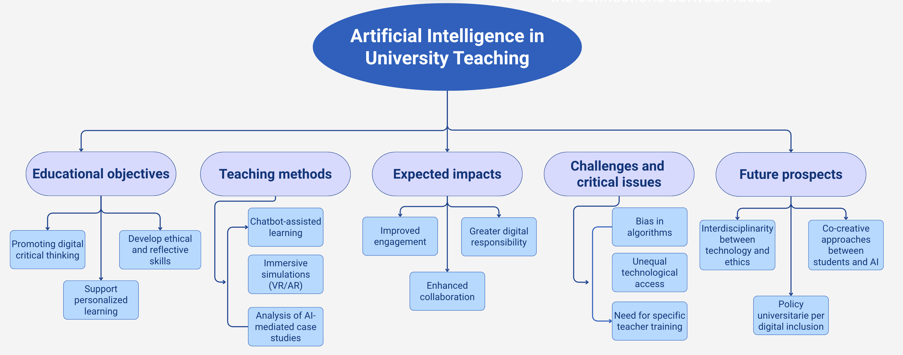

8 AI as a Creative Partner
8.1 1. Advanced Brainstorming
8.1.1 1.1 Definition and Potential of Advanced Prompting
The brainstorming stage is a strategic moment in research design and development processes, permitting the initial exploration and comparison of a wide spectrum of conceptual and operational possibilities.
Generative AI (GAI) serves as a tool for cognitive amplification by offering researchers original proposals based on prompts composed in natural language.
The success of this procedure depends critically on the quality of the prompt that is, on the precision and clarity of the textual instructions provided to the model.
We refer to advanced prompting when the input text incorporates structural elements that guide the model towards a targeted and relevant output.
Specifically, a meticulously constructed prompt details:
- The objective of the proposal
- The method envisaged for its implementation
- The expected impact within the application context.
This methodological approach transcends generic or unguided brainstorming, steering the AI–researcher interaction towards a structured co-design process rooted in clear aims and explicit methodological criteria.
8.1.2 1.2 Practical Application
Structured advanced brainstorming involves directing the AI (e.g. ChatGPT) to generate ideas within strategic parameters, using precise instructions that channel its creative capacities.
This is not free-form or arbitrary ideation but a focused and purposeful exercise.
a. An advanced prompt does not simply request “ideas” but it formulates a composite query specifying:
- The theme or problem (e.g. the central concept under investigation)
- The constraints (e.g. budgetary limits, available tools, contextual boundaries)
- The role (e.g. “respond as a researcher specialising in social pedagogy”).
b. Upon submission of the carefully crafted prompt, the AI returns a series of proposals, which may include:
- An original research question
- A feasible pilot project - A novel theoretical hypothesis
- A hybrid methodological approach.
c. As part of an iterative dialogue, the researcher can then:
- Select and elaborate on particular ideas
- Request alternative proposals
- Impose new constraints (e.g. “Exclude approaches already detailed in the literature”, “Focus only on qualitative-visual methods”)
- Combine multiple suggestions.
In this way, AI becomes a co-designer, generating hypotheses, scenarios, and strategies that enrich the researcher’s repertoire and stimulate critical reflection.
8.1.3 1.3 Construction of prompts with objective, method and expected impact
When using GAI to generate project ideas or research questions, the formulation of the prompt is a crucial step.
A prompt is not a simple question, but a strategic linguistic artefact, whose effectiveness depends on the user’s ability to translate a project intention into understandable and stimulating textual instructions for the model.
A particularly effective structure for generating relevant and coherent content involves articulating the prompt into three fundamental components:
1️⃣ Objective
Definition of the purpose of the proposal to be generated.
It can be educational (e.g. promoting critical thinking in primary school), social (e.g. promoting the inclusion of students with special educational needs), technological (e.g. experimenting with immersive environments for subject teaching) or scientific (e.g. exploring new variables in qualitative research).
👉🏻 The objective clarifies the general purpose towards which the generation of ideas should be directed, semantically delimiting the model’s field of action.
2️⃣ Method
Illustration of the operational process or methodology to be used to achieve the objective.
This may refer to pedagogical strategies (e.g. project-based learning, flipped classroom, gamification), research approaches (e.g. case study, participant observation, controlled experimentation) or theoretical models (e.g. situated learning theory, socio-constructivist approach).
👉🏻 Including the method in the prompt allows the model to structure proposals according to a consistent procedural logic, facilitating executive design.
3️⃣ Expected impact
Define the desired effects of the proposal in educational, cognitive, social or scientific terms.
This may refer, for example, to improving engagement, developing cross-cutting skills, generating new empirical data or validating theoretical hypotheses.
👉🏻 Specifying the impact encourages the model to generate proposals that are not only formally consistent but also geared towards an explicit transformative goal.
The integration of these three elements within the prompt results in a more precise semantic definition, allowing the model to produce higher quality outputs that are better aligned with specific contexts of use. This structure also facilitates the replicability of the process, paving the way for a systematisation of human-machine interaction in the design field.
8.1.4 1.4 Types of prompts for generating new ideas
Once they have acquired expertise in formulating structured prompts, users are able to consciously select from different types of prompts, each designed to stimulate specific forms of creative generation by the GAI.
The choice of prompt type must be calibrated in relation to the design requirements, the cognitive processes involved and the exploratory nature of the task.
The targeted adoption of these different modes of interaction allows the automatic generation to be directed towards specific goals, activating a dialogical process between AI and human design thinking.
The ability to select the most appropriate type of prompt for the context is, in this sense, an indicator of methodological maturity in the strategic use of artificial intelligence as a creative partner.
Among the main types of prompts:
🔍 Exploratory prompts
Exploratory prompts are designed to increase the conceptual possibilities on a given topic.
They are used in the initial phase of a project or when you want to gain a broad, flexible and unconventional overview of the options available.
These prompts stimulate AI to generate divergent ideas, going beyond habitual cognitive paths.
✏️ Example:
“Identify and describe five unconventional theoretical frameworks or methodological approaches through which to explore the relationship between environmental education and social justice in school contexts. Explicitly exclude standard curricular approaches and favour critical, decolonial or situated paradigms.”
🧬 Transformative prompts
This category of prompts aims to reformulate established practices in an innovative way.
AI is guided towards reconfiguring existing models in order to produce original solutions based on already known elements.
Transformative prompts are particularly useful in contexts of pedagogical innovation.
✏️ Example:
“Critically rethink the flipped classroom model in light of educational inequalities linked to the digital divide, with particular reference to marginalised or fragile school contexts. Develop a theoretical-methodological proposal that, while maintaining the dialogical and participatory structure of the original model, transforms its operating methods to make it culturally sensitive, accessible and applicable in the absence of stable digital infrastructure.”
⁉️ Hypothetical or conditional prompts
Hypothetical prompts invite the model to explore imaginary scenarios or contexts that do not yet exist, which are useful for building conceptual prototypes or anticipating emerging problems.
Their strength lies in their ability to activate lateral thinking and mental simulation.
✏️ Example:
“Imagine a completely decentralised university system, with no physical locations and based exclusively on immersive environments and artificial intelligence technologies. What pedagogical models, evaluation criteria and social interaction devices should be developed to ensure the fairness, quality and sustainability of the educational path?”
⚖️ Comparative prompts
Comparative prompts require the model to compare approaches, tools or strategies, highlighting their advantages, limitations and possible hybridisations.
This type of instruction is useful for stimulating analytical thinking and identifying areas for improvement in existing models.
✏️ Example:
“Compare the effectiveness of the phenomenological and experimental approaches in studying the subjective experience of learning in digital contexts. Highlight strengths, methodological limitations, and possibilities for integration into a mixed research design.”
⛓ Restrictive prompts
In some cases, the originality of proposals emerges despite – or thanks to – a series of imposed constraints.
Restrictive prompts limit the scope of AI, imposing strict conditions that force it to come up with novel solutions.
This mode is useful for testing creativity under pressure or in contexts with limited resources.
✏️ Example:
“Design an interdisciplinary research project on the theme of energy transition, to be carried out in a context with low technological access, no connectivity and extremely limited economic resources (maximum budget: £100). Indicate objectives, method, data collection tools and potential impacts.”
8.1.5 1.5 Practical applications: advanced research, interdisciplinary design, academic innovation
The use of advanced prompting in research is not a theoretical exercise for its own sake, but a strategic tool for stimulating the generation of hypotheses, tracing design paths and anticipating theoretical and methodological choices.
LLMs, in particular, can support the exploratory phase by expanding the possibilities for investigation and promoting a critical reorganisation of the initial paradigms.
In the Academic and Post-Doctoral context, GAI can be used to:
- explore new interdisciplinary configurations, for example by formulating hypotheses of contamination between sociological, pedagogical and critical technology studies approaches;
- generate original research questions based on emerging and ambiguous themes that are difficult to address using traditional disciplinary logic;
- simulate a preliminary mapping of the state of the art, highlighting gaps, theoretical overlaps and areas that have not yet been systematically addressed;
- produce methodological design proposals compatible with field constraints, ethnographic contexts, marginal populations or fluid digital environments;
- generate impact scenarios or speculative hypotheses useful for the design of interdisciplinary grants, including in a foresight or anticipatory key.
The conscious use of prompting also allows the conceptual soundness of a project proposal to be tested, encouraging comparison between alternative options and stimulating the reformulation of weak or implicit passages.
In this context, AI does not produce knowledge, but organises raw materials, theoretical languages and hypotheses of connection between domains of knowledge, acting as a dialogical and generative tool.
8.1.5.1 Examples of disciplinary use of prompting
• Sociology
Generation of alternative scenarios based on complex qualitative datasets (interviews, ethnographic observations), or exploration of hypotheses of correlation between emerging social phenomena (e.g. technologies and inequalities) from an intersectional perspective.
• History.
Simulation of divergent interpretations of controversial events; hypotheses for reinterpreting sources according to alternative theoretical paradigms (e.g. environmental history, history from below); exploration of the methodological implications of microhistory in the digital age.
• Education sciences
Design of innovative training devices for marginal contexts; exploration of the educational implications of AI in non-school environments; hybridisation between critical pedagogies and transformative approaches.
• Philosophy
Generation of questions based on contemporary ethical dilemmas related to artificial intelligence, the posthuman, or deep ecology; comparison between schools of thought on notions such as autonomy, intelligence, responsibility.
• Cultural studies and media studies
Critical reformulation of key concepts (identity, agency, representation) in the context of digital cultures and algorithms; simulation of discursive analyses based on multimodal media corpora.
8.2 2. Multi-Level Argumentative Schemes
8.2.1 2.1 Text mapping: concepts, relationships and hierarchies
The representation and organisation of ideas are a fundamental component in the processes of design, academic writing and critical thinking. In this context, GAI can be used to create textual concept maps that can convey the semantic complexity of a topic or research question in a structured form.
Unlike traditional graphic maps, multi-level textual mapping is organised into a hierarchical structure of nodes, expressed through natural language and organised according to levels of depth.

Example of a multilevel text mapping scheme
The main node represents the generative idea or central theme; sub-nodes derive from it, explaining thematic articulations, implications, related variables, counter-arguments or application examples. The entire map is configured as an orderly network of logical and semantic relationships, useful for both theoretical reflection and operational planning.
GAI is capable of generating this structure from a simple prompt, provided that the instruction accurately indicates the mapping objective and the desired level of articulation.
✏️ Prompt example to generate a multi-level text map:
“As a model language, your main task is to generate a multi-level text map on the following topic: ’[Insert topic]”. Organise the map according to this structure: the first node is the central topic; the first-level nodes represent the main categories; the second-level nodes contain insights, examples or implications. If necessary, you can add additional levels.”
8.2.2 2.2 Instructional strategies for developing text maps
In order for GAI to generate effective mapping, the user must provide a prompt with clear, structured, and conscious instructions.
In particular, it is useful to specify:
- the central theme to be developed
- the type of conceptual relationships to be highlighted (causes, effects, implications, alternatives, etc.)
- the level of depth required for each conceptual node.
✏️ Prompt examples:
“Develop a multi-level textual map from the concept of [topic], detailing objectives, pedagogical strategies, digital tools, and potential challenges.”.
“Organise the topic of digital citizenship education into a multi-level textual structure, distinguishing between theoretical principles, practical applications in schools and ethical implications.”
This type of instruction allows the model to generate a map organised according to logical criteria, reflecting systemic thinking patterns.
Furthermore, the flexibility of natural language allows elements typical of concept maps, such as hierarchies and relationships, to be combined with elements typical of academic outlines (argumentative sequences, levels of detail, examples).
The request for textual mapping can be repeated iteratively, prompting the model to refine the structure, add nodes, propose counter-arguments or make explicit any interconnections between concepts.
In this way, the map is not a static product, but an evolving artefact, generated through a cyclical interaction between human and machine. Furthermore, automatic text mapping serves a dual function: on the one hand, it allows for rapid exploration of the possible articulations of a concept; on the other, it promotes the consolidation of knowledge through the reformulation and systematisation of the generated content.
8.2.3 2.3 Iteration and dialogue with the model: refinement of patterns
The construction of multi-level argumentative schemes through the use of GAI is not limited to a single automatic generation, but is configured – as is often the case with other requests – as an iterative and dialogical process.
The user does not simply passively receive the generated map, but can (and must) actively interact with the model, prompting it to rework, deepen, clarify or restructure the content produced.
This interaction develops through a sequence of successive prompts that progressively improve the quality of the initial request.
Requests can usually be:
• Expansion: the user can ask the model to elaborate on a specific sub-node:
✏️ “Elaborate on the “digital tools” node within the multi-level text map on formative assessment. Include concrete examples, emerging methodologies, and comparative application contexts.”
• Clarification: the user can detect conceptual ambiguities or generic formulations, asking the model to rephrase or specify:
✏️ “Rephrase the explanation regarding the distinction between “teaching strategies” and “assessment methods”, improving terminological precision and internal consistency.”
• Reorganisation: if the structure is weak from a logical or hierarchical point of view, it is possible to request a new articulation of the nodes:
✏️ “Restructure the hierarchical map by assigning three main conceptual axes: theoretical, operational and critical, and redistribute the second-level nodes according to this logic.”
• Comparison: to enrich the map, the user can prompt the model to integrate alternative points of view or competing approaches:
✏️ “Integrate sections dedicated to critical perspectives, emerging alternative approaches and hybrid models with respect to dominant digital skills into the map on digital citizenship.”
Through these successive interactions, the textual map becomes progressively more robust, coherent and articulated, transforming itself from a simple thematic list into a true argumentative structure.
8.2.3.1 Iterative prompt engineering: epistemic cycle
The coordinated sequence of prompts aimed at expansion, clarification, reorganisation and comparative analysis transforms interaction with AI into an advanced epistemic process.
It is a model in which the user does not simply receive output, but iteratively designs, tests and refines content according to criteria of academic rigour.
The cyclical flow
Thematic expansion
The user asks the model to detail specific conceptual nodes, enriching them with concrete examples, comparative contexts or disciplinary references.Semantic clarification
Potential ambiguities, reformulations or terminologically weak concepts are addressed, increasing precision and internal consistency.Logical-structural reorganisation
If hierarchical weaknesses emerge, a conceptual redistribution consistent with new thematic axes or narrative levels is required.Comparison and plurality of perspectives
The model is invited to integrate alternative perspectives, critical approaches or emerging voices, enriching the map with plurality of arguments.
8.2.4 2.4 Argumentative structures: causes, effects, implications, limitations
One of the most significant uses of GAI in the construction of multi-level textual schemas is the possibility of developing actual argumentative structures, organised according to logical and relational categories.
In this case, the textual map is not limited to representing a conceptual taxonomy, but takes the form of an articulated discursive organisation, useful for supporting a thesis, exploring a problem or structuring a critical analysis.
It is possible to orient the model from the outset towards a defined argumentative grid, for example:
- Causes: structural factors that generate the phenomenon under study
- Effects: observed or predicted consequences
- Implications: ethical, social, political, pedagogical or technological repercussions
- Limitations: critical issues, constraints, potential grey areas.
The user can specify the desired argumentative framework from the outset, e.g. in a prompt such as this:
✏️ “As an SSH researcher, generate a multi-level textual map on a topic such as “Environmental education and urban justice”. Articulate the map according to structural causes, educational effects, social implications and limitations. Respond in Markdown with a heavily indented list and key points. Include references to critical paradigms (e.g. eco-pedagogy, postcolonialism).”
This mode promotes the development of critical thinking and awareness of the problematic dimensions of the phenomenon analysed.
This approach generates a coherent and solid map, capable of supporting complex discourse, that becomes both an argumentative support and a basis for written constructions or oral presentations.
Multi-level mapping is inspired by established practices in Social Science and Humanities (SSH) research, reflecting formal approaches to academic writing (APA, MHRA, Turabian) and Donald Schön’s models of reflective practice.
See Schön, D. A. (2017). The reflective practitioner: How professionals think in action
For Researchers
The multi-level textual map allows you to systematically explain complex relationships between causes, effects, implications and future prospects.
This structure is particularly useful for:
- systematically explaining complex relationships between causes, effects and implications
- designing chapters of theses and academic articles
- building funding proposals (grants)
- organising complex theoretical and methodological structures.
For Metacognitive Activities (Students and Doctoral Candidates)
Incorporating argumentative maps into training exercises promotes:
- the critical reformulation of existing maps
- the production of interdisciplinary counter-maps
- the comparison of competing theoretical positions.
👉🏻 These activities promote genuine reflection on the process of thinking and planning, which is essential in advanced SSH courses.
8.3 3. Self-feedback on generated content
One of the most promising developments in GAI is the possibility of using language models not only for content production, but also for internal and iterative critical evaluation.
Self-feedback, also known as self-evaluation, is a way of using LLMs that goes beyond mere text generation, involving them in the systematic critique of their own output.
Given clearly defined inputs, the model performs a self-referential evaluation of previous outputs and suggests improvements.
Self-feedback activates a reflective chain: the model analyses its own output against specific criteria (e.g. consistency, clarity, originality), generates an internal review, and proposes an improved version.
This cycle of judging–reformulating–judging transforms initial content into more robust outputs, without the need for fine-tuning. This type of output, if well trained, can constitute a first level of analysis useful for improving the communicative effectiveness, internal consistency, and originality of the materials generated.
From an educational and scientific point of view, self-feedback represents a significant innovation: it introduces an evaluative instance within the generative interaction itself, enabling a virtuous cycle of production-reflection-reformulation.
8.3.1 3.1 Main techniques and evidence
a. Self Refine (Iterative Refinement with Self Feedback)
The Self Refine technique involves a LLM generating an initial output, critically evaluating it against defined criteria, and then reformulating it in an iterative cycle: generate → feedback → refine.
All this is done with the same model, without the need for supervised data or a fine-tuning phase.
Each iteration keeps track of the output + feedback history, which the model draws on to avoid repetition and constantly improve.
✏️ Prompt example:
“Review the following paragraph according to academic criteria of terminological accuracy and argumentative rigour. Propose a reworded sentence that is clearer and more coherent.”
b. Self-Critique Guided Reasoning
In this strategy, the model guides its own reasoning with chain of thought steps followed by critical self-evaluation.
This promotes conceptual consistency, logical precision, and the reduction of significant omissions.
It is useful in complex contexts where internal consistency is crucial. See article
✏️ Prompt example:
“You have just generated a text/project. Now analyse it critically. Indicate at least three points of possible improvement in terms of logical consistency and original content.”
c. Auto-evaluation (LLM-as-a-Judge)
Here, the model takes on the role of an impartial authority: it evaluates output according to explicit disciplinary criteria (logical consistency, relevance, accuracy, originality, clarity), assigning a score and generating structured feedback.
✏️ Prompt example:
This prompt can be used to monitor and standardise the reliability of automatic interaction in SSH writing contexts.
“You are an expert academic evaluator. Your task is to judge the quality of the following output produced by an AI model in response to a research question. Base your assessment on the following criteria: logical consistency, relevance to the question, accuracy of data, originality of reasoning, and clarity of presentation. Provide a score from 1 to 5 (where 1 = very poor, 5 = excellent) followed by a bullet-point summary of strengths and weaknesses.. Research question:
{input}
Model output:
{output}
Respond with:
*Score: __*
Bullet-point feedback:
• …“*
d. Self Restraint (ReSearch)
The ReSearch technique, or self-restraint, teaches the model to independently detect its own uncertainty. Through a utility function and an iterative self-prompting process, the model learns to refrain from acting when it perceives low confidence.
👉🏻 This significantly reduces hallucinations on complex topics, without additional inference costs.
See article
✏️ Prompt example:
This prompt activates the ReSearch strategy: the model assesses its own uncertainty and, if necessary, refrains from making predictions or signals caution. In literature, this approach has been shown to significantly reduce hallucinations without additional inference costs. See article
“You have just generated a section of theoretical analysis on a complex interdisciplinary topic. Now critically analyse the text and reflect on your level of confidence: if there are any uncertain or potentially incorrect parts, abstract them (‘I am not sure’; ‘I will not answer’). Report:
1. Areas where your knowledge is limited or uncertain.
2. Parts that may be ambiguous or incorrect.
3. Decision whether to continue or withdraw.
Generated text:
{text}
Respond with a bulleted list:
- Section …
- Confidence: high/medium/low
- Notes on any errors or missing data”
8.3.2 3.2 Advantages in the SSH context
a. Strengthening internal consistency and originality
Prompts geared towards internal verification of argumentative sequences help identify logical gaps, hidden contradictions and misalignments between objectives and expected results.
One of the most important aspects in evaluating a text, whether it is a project, theoretical or argumentative, concerns its internal consistency.
This term refers to the logical adherence between the parts of the text, the absence of obvious contradictions, the linearity of reasoning and the congruence between stated objectives, methods used and expected results.
👉🏻 Through specific prompts, it is possible to ask the AI to simulate an internal review of the text itself.
✏️ Prompt examples:
“Analyse the following educational project and report any inconsistencies between objectives, methodology and assessment tools.”
“Check whether the following paragraphs are consistent with each other from a logical and semantic point of view.”
The model is able to detect structural misalignments, significant omissions, redundant or ambiguous passages. Although it cannot guarantee an infallible assessment, its pattern recognition capability allows it to quickly identify the main formal critical issues, providing a starting point for manual review.
In addition to consistency, a second fundamental evaluation axis concerns the degree of originality of a proposal or content.
✏️ Prompt examples:
“Assess how much the following project deviates from traditional teaching models and indicate any innovative elements.”
“Compare the proposed strategy with established educational practices and point out how it differs.”
b. Encouraging epistemic reflection
Designing cycles in which AI suggests revisions involves reflecting on one’s own critical thinking: this is essential in SSH contexts in order to develop robust methodological awareness.
✏️ Prompt Example 1: Critically review the output
This approach allows the model to assemble a true metacognitive cycle: it identifies gaps, implicit assumptions, reasons at the epistemic level, and then proposes changes.
“You have just generated a paragraph (or section) on a research topic. Reread it critically and answer these questions:
- What implicit assumptions appear and need to be argued or verified?
- Which logical steps were unclear or ambiguous?
- What alternative perspectives or theoretical approaches are missing?
- Suggest at least two methodological revisions or additions to make the text more epistemically robust.”
✏️ Prompt Example 2: Structured reflection for disciplinary and comparative purposes
This framework is inspired by frameworks such as Reflexion, which structure verbalised feedback to reinforce critical skills in LLM models, including in the epistemic-social context.
“Act as a reflective expert in the field of SSH. Analyse the text provided in the following points:
- What underlying theoretical paradigms emerge (explicitly or implicitly)?
- Are there any disciplinary biases or implicit ideological orientations? Where?
- How consistent is the argumentative position with known theoretical sources?
- Indicate two passages where an interdisciplinary or critical approach could be useful and suggest additions.”
Both templates:
- guide the model to take an epistemic stance, not just a technical-informative one;
- promote self-assessment that induces critical awareness of the generated text;
- encourage interdisciplinary integration and the detection of implicit biases.
👉🏻 You can use them in sequence (first A, then B) for a cycle of progressive reflection: from logical gaps to disciplinary biases to structured critical intervention.
c. Scalability and timeliness of feedback
In collaborative learning or writing processes, AI can provide personalised feedback in real time, overcoming limitations associated with limited human resources See article
✏️ Prompt Example 1: Real-time feedback on text drafts.
Ideal for collaborative writing cycles: provides immediate feedback on paragraphs or drafts, facilitating quick and effective revisions.
“Access the following text immediately and provide structured feedback on: - strengths
- areas for improvement
- practical suggestions for revision
- any methodological or theoretical gaps
Limit your response to approximately 300 words.
Text to be evaluated: {text}”
✏️ Prompt Example 2: Rapid assessment with disciplinary criteria
This approach is ideal for collaborative writing cycles in academia: it allows for immediate feedback on drafts or paragraphs, facilitating rapid and detailed revisions.
It is particularly useful for thesis sections, abstracts or funding proposals in SSH disciplines, as it offers accurate and replicable assessments with scientifically rigorous criteria.
“Analyse this paragraph/draft relating to [abstract/grant title/thesis section title] according to the following criteria:
- Consistency between objectives, content and conclusions.
- Clarity of expression according to disciplinary vocabulary.
- Originality compared to common writing in the field.
- Conceptual relevance to the specified SSH context.
- Respond in bullet points, indicating practical suggestions for a quick revision”
✏️ Prompt Example 3: Automated incremental improvement cycle
Great for SSH teaching based on iterative writing: immediate alternation between feedback and rewriting to refine content.
“For the text provided:
- Indicate 3 structural or conceptual issues
- Suggest 3 specific rewrites to resolve them
- Release a revised version (max 250 words)
Format:
- Pointed feedback
- Revision proposals
- New summary version
Text to be revised: {text}”
d. Critical support for reformulation
‘Self-Refine’ or ‘Self-Critique’ prompts help to reorganise texts while keeping their content intact, but improving their clarity and argumentative rigour.
✏️ Prompt Example 1 – Self-Refine (Iterative Refinement with Self Feedback)
“Examine the following paragraph and report any critical issues from an argumentative, structural or stylistic point of view. Then rewrite it incorporating the revisions:
- Critical feedback
- Reformulated, clearer and more coherent version
Original paragraph:
{text}
✏️ Prompt Example 2 – Self Critique Guided Reasoning
This mode reinforces conceptual consistency and reduces logical errors through guided self-criticism, in line with recognised practices in advanced prompting.
“You have generated the following text on a complex academic topic.
Now: i)Indicate at least three possible weaknesses or ambiguities (e.g., unclear reasoning, implicit assumptions, risky logical leaps). ii)Suggest concrete revisions for each. iii) Finally, rephrase the paragraph incorporating the suggested improvements. Text:
{text}”
8.3.3 3.3 Educational and Academic applications
In the field of advanced educational and academic applications, the strategic integration of GAI effectively supports both teachers and doctoral students in the SSH. Thanks to the use of asymmetric prompts between production and internal evaluation, it is possible to design multi-level argumentative maps, pedagogical analysis structures and complex thesis chapters, benefiting from automatic feedback support that can assist the human author with methodological rigour and epistemic continuity.
Similarly, the paradigm of automated self-evaluation proves to be fundamental during learning and educational research: students and doctoral candidates can submit individual sections, drafts or papers to the AI.
The latter, guided by defined evaluation rubrics, identifies critical issues, proposes structured revisions and transforms the simple production of text into an active metacognitive experience, reinforcing critical reflection and epistemic awareness.
Furthermore, the synergistic combination of prompts for production and prompts dedicated to feedback generates an iterative flow of qualitative improvement in outputs.
In this configuration, academic writing is no longer a solitary act, but a continuous dialogue in which AI takes on the role of a semi-autonomous interlocutor: it generates, evaluates, reformulates and enriches content in close dialogue with the user. This mechanism is similar to robust research methodologies, where scientific argumentation is constructed through successive approximations, revisions, and structural refinements.
The systematic application of this approach supports:
- reflective design (argumentative maps, articles, thesis chapters) with automatic validation
- a reflective and formative teaching practice, in which students become autonomous in reviewing their own work
- the strengthening of coherence, originality and rigour, thanks to explicit cognitive cycles of generation, evaluation and progressive reformulation.
This model of interaction with AI respects and values the role of the human researcher, acting as a true epistemic partner in the construction of knowledge.
8.4 Further reading
“In educational settings, self-generated feedback from LLM has been shown to improve student writing performance and motivation compared to static feedback”.
See Article
“A study has shown that LLM-driven feedback, when guided by well-designed prompts, outperforms that of beginners and, in some categories, even that of experts in the context of teacher training education, offering faster and more specific feedback”
See Article
“The self-contrast paradigm has shown positive effects in comparing divergent solutions generated by the same model, improving stability and accuracy”
See Article
“An analysis of over 2,600 users in tutor/student lessons shows that LLM-on-demand explanatory feedback improves performance with significant standardised effects (0.28–0.33), with equivalent response times and high user satisfaction”
See Article
“A systematic review highlights how automated GenAI feedback systems reduce the teacher’s workload, enabling effective cognitive and emotional interventions, and improve educational interaction with students in large-scale contexts”
See Article